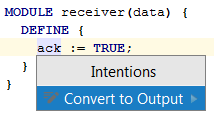

Frequently you can enhance or alter your code by means of predefined semi-automated procedures called Intentions. By pressing &shortcut:ShowIntentionActions; MPS will show you a pop-up dialog with options applicable to your code at the current position.
